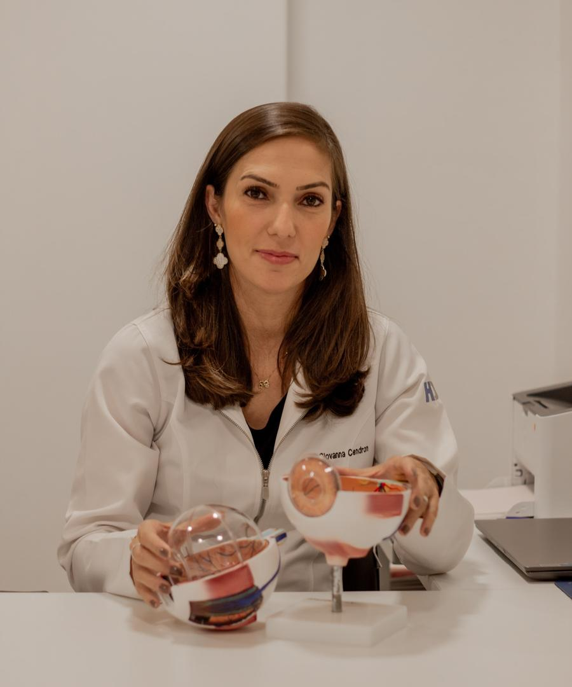
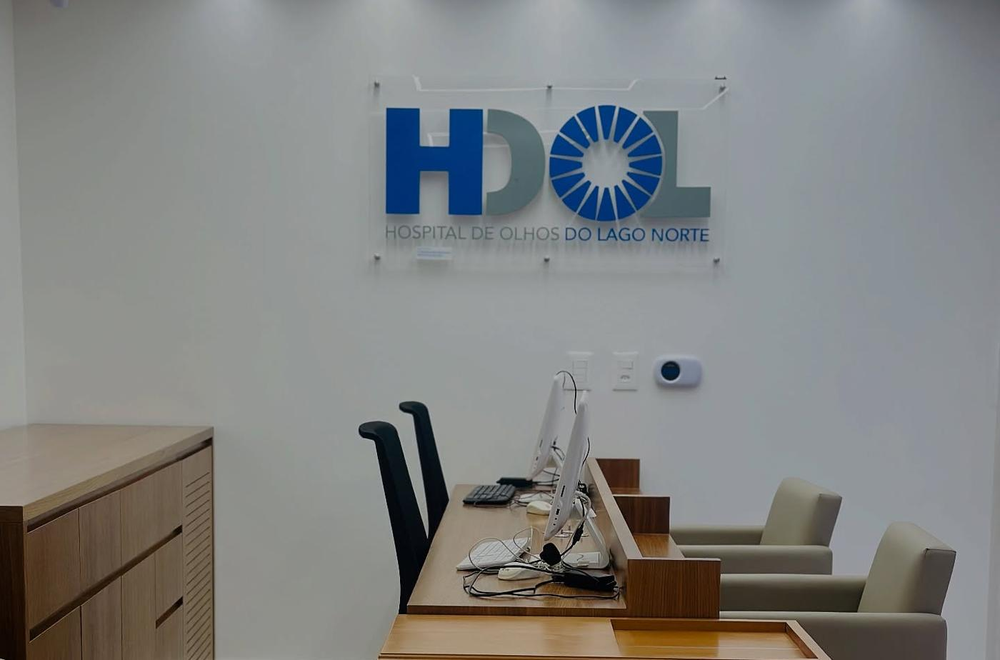
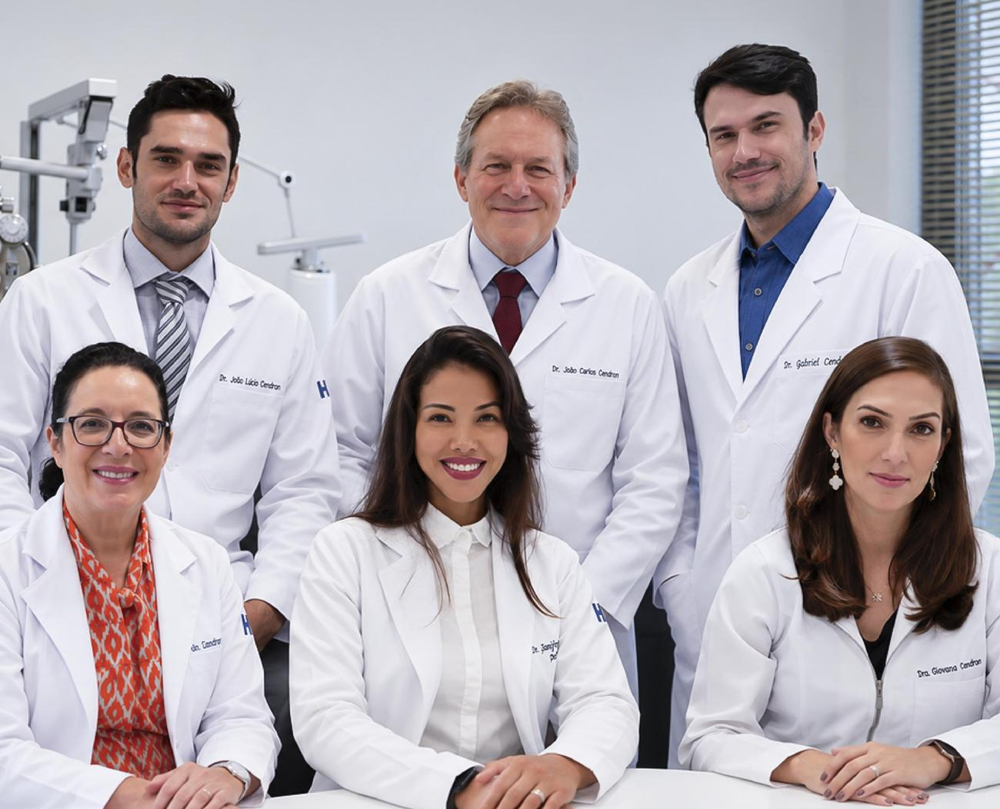

Catarata
Quando o cristalino, a lente natural do olho, fica opaco. A visão embaça e as cores perdem o brilho.
- Avaliação e exames pré-operatórios
- Cirurgia com troca do cristalino por uma lente intraocular
Dra. Giovanna Cendron
Hospital oftalmológico com centro cirúrgico próprio no Lago Norte e uma unidade na Asa Sul. Atendemos da criança ao idoso, com uma equipe que começou em família.

Toque no que mais se parece com o seu caso para ver as áreas que cuidam disso. Pode marcar mais de uma opção.
Mostrando todas as áreas. Isto é só um guia: quem orienta o tratamento é o médico, na consulta.
Quando o cristalino, a lente natural do olho, fica opaco. A visão embaça e as cores perdem o brilho.
Dra. Giovanna Cendron
Doença do nervo óptico que costuma avançar sem dor e sem sintomas no começo. O diagnóstico precoce faz diferença.
Dr. João Carlos Cendron
Avaliação da parte do olho que transforma luz em imagem, importante para quem tem diabetes ou pressão alta.
Dr. Gabriel Cendron
Cuidado com a visão de bebês, crianças e adolescentes, fase em que enxergar bem pesa no aprendizado.
Dra. Virgínia Delacroix
Cuidado com pálpebras e vias lacrimais, por função e por conforto.
Dra. Janiffer Keiko
Miopia, hipermetropia, astigmatismo e a dificuldade de perto que costuma aparecer depois dos 40.
Dr. João Carlos Cendron
Ardência, sensação de areia e a película que cresce sobre o olho, comum em quem passa muito tempo ao sol.
Equipe HDOL
Exames que mostram o que a consulta sozinha não vê, rápidos e sem dor.
Com pedido médico ou após a consulta
Arraste a linha sobre a foto da nossa recepção. À esquerda, uma visão saudável. À direita, a simulação.
Simulação ilustrativa. Os sintomas variam de pessoa para pessoa, e só o exame oftalmológico confirma um diagnóstico.

Visão saudável CatarataConsultas, exames e cirurgias no mesmo lugar. O centro cirúrgico fica na unidade do Lago Norte.

O HDOL nasceu de uma família de oftalmologistas: pai, filho e filha, hoje ao lado de uma equipe que cobre cada fase da visão, da infância à maturidade.
Digite o nome do seu plano ou parceiro. Se ele não aparecer, pergunte no WhatsApp antes de marcar.
lista parcial Os demais convênios entram aqui quando o HDOL enviar a lista oficial.
Preencha o que precisa e a mensagem chega pronta ao WhatsApp da recepção. Ninguém fica esperando digitar tudo de novo.
O centro cirúrgico fica na unidade do Lago Norte, no SHIN CA 5, Bloco J2. A unidade da Asa Sul faz consultas e exames.
Fale direto com a equipe pelo WhatsApp exclusivo de cirurgias, (61) 92000-7750. Ele atende antes, durante e depois do procedimento.
Sim. O HDOL tem oftalmopediatria, com atendimento de bebês, crianças e adolescentes, além de avaliação de estrabismo.
Alguns exames usam colírio que dilata a pupila e deixa a visão embaçada por algumas horas. Quando for o seu caso, a recepção avisa no agendamento. Nesses dias, prefira vir acompanhado e não dirigir.
A lista do site ainda está sendo completada. Mande o nome do seu plano pelo WhatsApp (61) 99965-6111 e a recepção confirma antes de marcar.